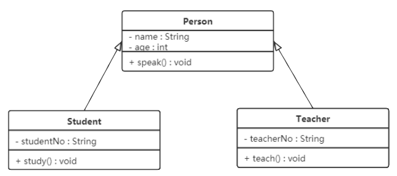
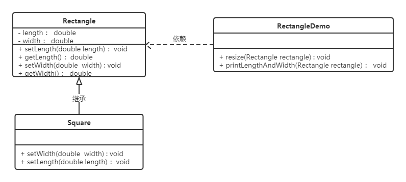
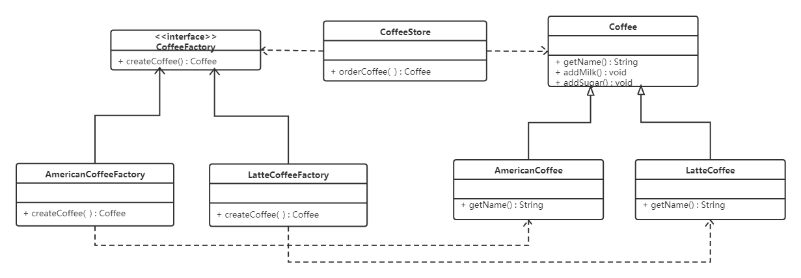
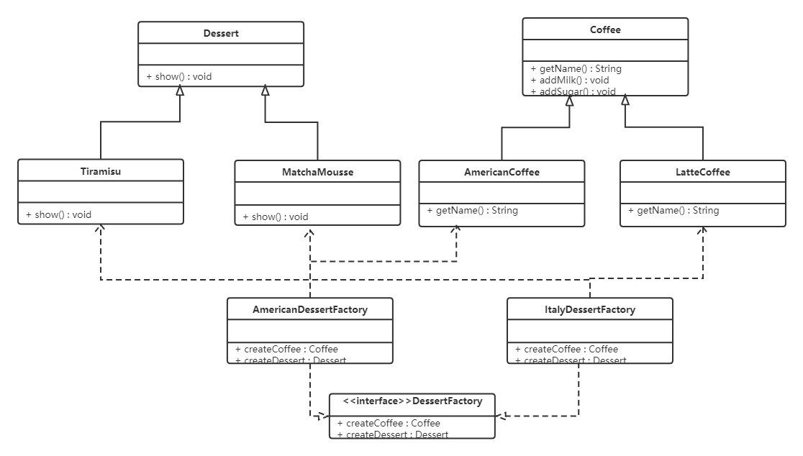
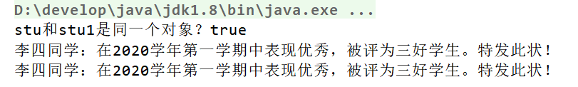
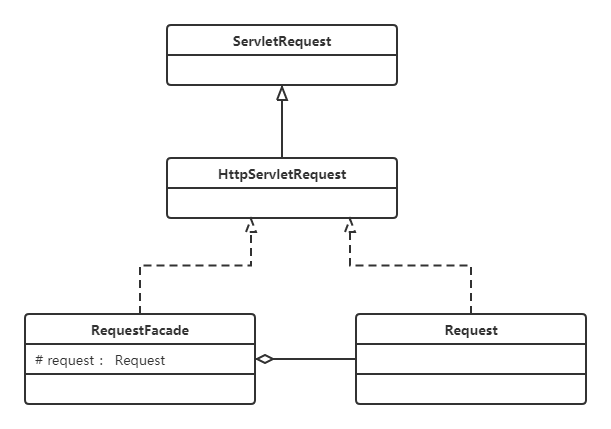
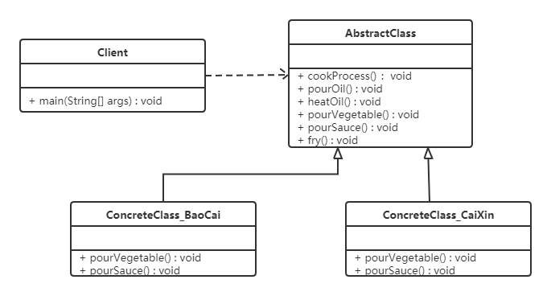
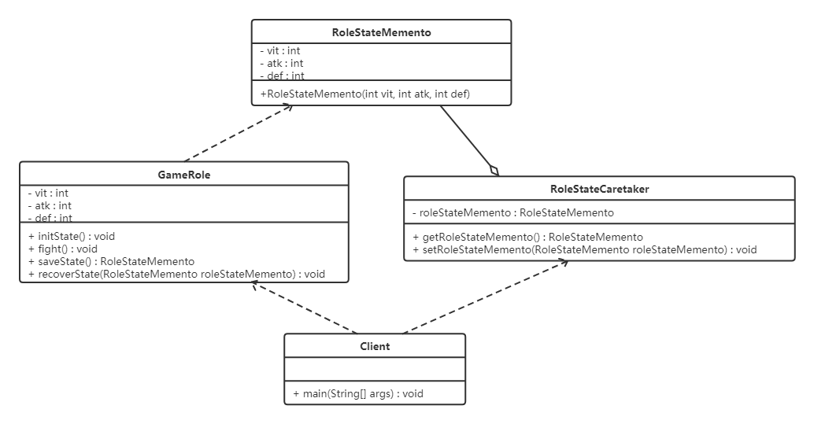
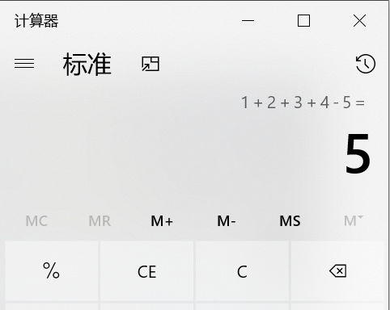
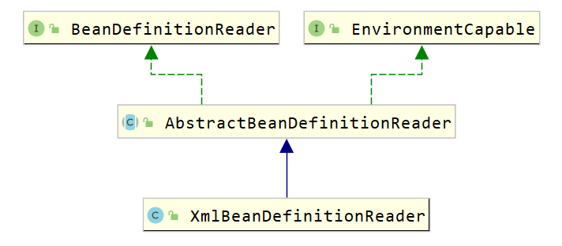

设计模式学习
基础前置知识
设计模式概述
"设计模式"最初并不是出现在软件设计中，而是被用于建筑领域的设计中。
1977年美国著名建筑大师、加利福尼亚大学伯克利分校环境结构中心主任
克里斯托夫·亚历山大（Christopher Alexander）在他的著作《建筑模式语言：城镇、建筑、构造》中描述了一些常见的建筑设计问题，并提出了 253 种关于对城镇、邻里、住宅、花园和房间等进行设计的基本模式。1990年软件工程界开始研讨设计模式的话题，后来召开了多次关于设计模式的研讨会。直到1995 年，艾瑞克·伽马（ErichGamma）、理査德·海尔姆（Richard Helm）、拉尔夫·约翰森（Ralph Johnson）、约翰·威利斯迪斯（John Vlissides）等 4 位作者合作出版了《设计模式：可复用面向对象软件的基础》一书，在此书中收录了 23 个设计模式，这是设计模式领域里程碑的事件，导致了软件设计模式的突破。这 4 位作者在软件开发领域里也以他们的“四人组”（Gang of Four，GoF）著称。
软件设计模式（Software Design Pattern），又称设计模式，是一套被反复使用、多数人知晓的、经过分类编目的、代码设计经验的总结。它描述了在软件设计过程中的一些不断重复发生的问题，以及该问题的解决方案。也就是说，它是解决特定问题的一系列套路，是前辈们的代码设计经验的总结，具有一定的普遍性，可以反复使用。
分类
创建型模式
用于描述“怎样创建对象”，它的主要特点是“将对象的创建与使用分离”。GoF（四人组）书中提供了单例、原型、工厂方法、抽象工厂、建造者等 5 种创建型模式。
结构型模式
用于描述如何将类或对象按某种布局组成更大的结构，GoF（四人组）书中提供了代理、适配器、桥接、装饰、外观、享元、组合等 7 种结构型模式。
行为型模式
用于描述类或对象之间怎样相互协作共同完成单个对象无法单独完成的任务，以及怎样分配职责。GoF（四人组）书中提供了模板方法、策略、命令、职责链、状态、观察者、中介者、迭代器、访问者、备忘录、解释器等 11 种行为型模式。
UML图
统一建模语言（Unified Modeling Language，UML）是用来设计软件的可视化建模语言。它的特点是简单、统一、图形化、能表达软件设计中的动态与静态信息。
UML 从目标系统的不同角度出发，定义了用例图、类图、对象图、状态图、活动图、时序图、协作图、构件图、部署图等 9 种图。
类图
类图是面向对象建模的主要组成部分。
- 显示了模型的结构：静态元素、类的结构
- 描述了类之间的关系
类表示方法

属性/方法名称前加的加号和减号表示了这个属性/方法的可见性，UML类图中表示可见性的符号有三种：
+：表示public
-：表示private
#：表示protected
属性的表达格式： 可见性 名称 ：类型 [ = 缺省值]
方法的表达格式： 可见性 名称(参数列表) [ ： 返回类型]
类与类之间关系的表达
关联
关联关系是对象之间的一种引用关系，用于表示一类对象与另一类对象之间的联系
单向关联

成员变量包含对方
双向关联

互相包含
自关联

自我包含，类似链表
聚合
聚，强调个体聚集在一起组成大团体，类中通过成员变量实现：
例如，学校与老师的关系，学校包含老师，但如果学校停办了，老师依然存在。

组合
一个大整体有许多部件。
一旦整体对象不存在，部分对象也将不存在，部分对象不能脱离整体对象而存在。例如，头和嘴的关系，没有了头，嘴也就不存在了。

依赖
依赖关系是一种使用关系，它是对象之间耦合度最弱的一种关联方式。
就是某个类的方法中，涉及到调用另一个类的方法完成某些职责

继承
继承关系是对象之间耦合度最大的一种关系，表示一般与特殊的关系

实现
实现关系是接口与实现类之间的关系。在这种关系中，类实现了接口，类中的操作实现了接口中所声明的所有的抽象操作。

软件设计原则
开闭原则
扩展开放，修改关闭。在程序需要进行拓展的时候，不能去修改原有的代码，实现一个热插拔的效果。简言之，是为了使程序的扩展性好，易于维护和升级。
实现：利用接口和抽象类
案例：
分析：搜狗输入法
的皮肤是输入法背景图片、窗口颜色和声音等元素的组合。用户可以根据自己的喜爱更换自己的输入法的皮肤，也可以从网上下载新的皮肤。这些皮肤有共同的特点，可以为其定义一个抽象类（AbstractSkin），而每个具体的皮肤（DefaultSpecificSkin和HeimaSpecificSkin）是其子类。用户窗体可以根据需要选择或者增加新的主题，而不需要修改原代码，所以它是满足开闭原则的。

里氏代换原则
任何基类可以出现的地方，子类一定可以出现。
通俗理解：子类可以扩展父类的功能，但不能改变父类原有的功能。换句话说，子类继承父类时，除添加新的方法完成新增功能外，尽量不要重写父类的方法。
关键点：针对继承操作的优化，开闭原则的保证。
错误案例：【例】正方形不是长方形。
在数学领域里，正方形毫无疑问是长方形，它是一个长宽相等的长方形。所以，我们开发的一个与几何图形相关的软件系统，就可以顺理成章的让正方形继承自长方形。

在resize方法中，Rectangle类型的参数是不能被Square类型的参数所代替，如果进行了替换就得不到预期结果。（这里正方形对象执行resize方法会无限循环，代码出错，导致长方形可以出现，正方形不可以）因此，Square类和Rectangle类之间的继承关系违反了里氏代换原则，它们之间的继承关系不成立，正方形不是长方形。
优化如下：
说明正方形和长方形的继承关系不对，需要重新定义这两者的关联。
可以抽象一个新的接口：四边形接口。

依赖倒转原则
高层模块不应该依赖低层模块，两者都应该依赖其抽象；抽象不应该依赖细节，细节应该依赖抽象。
低层模块和细节：可以理解为具体实现类。把底层的实现类们，都抽象成一个接口给高层依赖，这样高层对于组合的选择多样化，也体现了面向对象的多态思想。
案例
现要组装一台电脑，需要配件cpu，硬盘，内存条。只有这些配置都有了，计算机才能正常的运行。选择cpu有很多选择，如Intel，AMD等，硬盘可以选择希捷，西数等，内存条可以选择金士顿，海盗船等。
类图如下：

缺陷：我这个电脑他只能局限于这三家的产品：西街、因特尔、king...
用户想自行组装电脑，需要不同厂家的，该怎么办？
也就是说computer不应该依赖低层模块不应该依赖细节。所以我们把细节分别抽象一个接口出来：
类图如下：

接口隔离原则
客户端不应该被迫依赖于它不使用的方法；一个类对另一个类的依赖应该建立在最小的接口上——接口最小化。
案例：
1、B类继承了A类的两个方法，分别为1,2。但是我B只想要A的方法1.但我被迫继承了方法2，导致代码冗余。其实就是这个接口定义的范畴有点广，它的两个方法本质不一样了。
解决：把方法1,2拆分到两个接口中去，让接口最小化。B类根据情况实现接口。
其实就是实现了接口方法的隔离。
2、【例】安全门案例
我们需要创建一个黑马品牌的安全门，该安全门具有防火、防水、防盗的功能。可以将防火，防水，防盗功能提取成一个接口，形成一套规范。类图如下：

设计缺陷：我的安全门要是只有其中两个功能，继承了这个接口，必须要求我做这三个功能，臣妾做不到哇...
改进：接口拆分

迪米特法则
迪米特法则又叫最少知识原则。
只和你的直接朋友交谈，不跟“陌生人”说话（Talk only to your immediate friends and not to strangers）。
含义：两个软件或类实体无须直接通信，那么就不应当发生直接的相互调用。通过第三方转发调用。
目的：降低类之间的耦合度
【例】明星与经纪人的关系实例
明星由于全身心投入艺术，所以许多日常事务由经纪人负责处理，如和粉丝的见面会，和媒体公司的业务洽淡等。这里的经纪人是明星的朋友，而粉丝和媒体公司是陌生人，所以适合使用迪米特法则。
类图如下：

单一职责原则
单一职责原则(Single Responsibility Principle, SRP)：一个类只负责一个功能领域中的相应职责，或者可以定义为：就一个类而言，应该只有一个引起它变化的原因。
解读：
- 一个类不能太累，不能做太多的事，做好自己领域擅长的事即可。
- 一个类如果很庞大，复用性会降低。
属于迪米特法则的一种。
目的：实现高内聚、低耦合，提高复用性。
案例：
CRM（Customer Relationship Management，客户关系管理）系统中客户信息图形统计模块提出了如图1所示初始设计方案：
图1 初始设计方案结构图
在图1中，CustomerDataChart类中的方法说明如下：
getConnection() 方法用于连接数据库，
findCustomers() 用于查询所有的客户信息
createChart() 用于创建图表
displayChart() 用于显示图表。
上述的类结构完全可以实现我们的需求。但是它违背了单一原则，把所有的事情都做了。
现使用单一职责原则对其进行重构。
图1中的问题：
CustomerDataChart类承担了太多的职责，既包含与数据库相关的方法，又包含与图表生成和显示相关的方法。
难以复用：如果在其他类中也需要连接数据库或者使用findCustomers()方法查询客户信息，则难以实现代码的重用。无论是修改数据库连接方式还是修改图表显示方式都需要修改该类，它不止一个引起它变化的原因，违背了单一职责原则。
因此需要对该类进行拆分，使其满足单一职责原则，类CustomerDataChart可拆分为如下三个类：
DBUtil：负责连接数据库，包含数据库连接方法getConnection()；
CustomerDAO：负责操作数据库中的Customer表，包含对Customer表的增删改查等方法，如findCustomers()；
CustomerDataChart：负责图表的生成和显示，包含方法createChart()和displayChart()。
使用单一职责原则重构后的结构如图2所示：
合成复用原则
复用代码，组合或聚合>继承。
继承复用有简单和易实现，存在以下缺点：
- 继承复用破坏了类的封装性。因为继承会将父类的实现细节暴露给子类，父类对子类是透明的，所以这种复用又称为“白箱”复用。
- 子类与父类的耦合度高。父类的实现的任何改变都会导致子类的实现发生变化，这不利于类的扩展与维护。
- 它限制了复用的灵活性。从父类继承而来的实现是静态的，在编译时已经定义，所以在运行时不可能发生变化。
采用组合或聚合复用时，可以将已有对象纳入新对象中，使之成为新对象的一部分，新对象可以调用已有对象的功能，它有以下优点：
- 它维持了类的封装性。因为成分对象的内部细节是新对象看不见的，所以这种复用又称为“黑箱”复用。
- 对象间的耦合度低。可以在类的成员位置声明抽象。
- 复用的灵活性高。这种复用可以在运行时动态进行，新对象可以动态地引用与成分对象类型相同的对象。
案例：
【例】汽车分类管理程序
汽车按“动力源”划分可分为汽油汽车、电动汽车等；按“颜色”划分可分为白色汽车、黑色汽车和红色汽车等。颜色是需要复用的。
如果同时考虑这两种分类，其组合就很多。类图如下：

从上面类图我们可以看到使用继承复用会产生很多子类，如果现在又有新的动力源或者新的颜色的话，就需要再定义新的类。我们试着将继承复用改为聚合复用看一下。

这样有新动力源汽车加入，只需额外创建一个类即可。
创建者模式
关注点：“怎样创建对象？”
特点是“将对象的创建与使用分离”。
创建型模式分为：
- 单例模式
- 工厂方法模式
- 抽象工程模式
- 原型模式
- 建造者模式
单例模式
结构：
- 创建单一对象的类
- 获取该对象的外部类
特点：
- 构造私有化
- 对外暴露获得对象接口
饿汉式实现
类加载的时候就创建单例对象，
静态成员变量
1 | public class Singleton1 { |
静态代码块
1 | public class Singleton2 { |
枚举
1 | /** |
优势
- 无线程安全问题：线程安全一般发生在运行时，而静态成员变量也好还是代码块都在类加载的时候就创建，不会出现并发问题。
缺陷
如果不调用这个单例类，那这个单例类的对象就会占用内存空间。
懒汉式实现
类加载不会导致该单实例对象被创建，而是首次使用该对象时才会创建
非线程安全：
1 | public class Singleton3 { |
线程安全分析：
多线程同时进入到if判断逻辑，就会创建多个实例。
线程安全
单锁
1 | public class Singleton3 { |
- 性能较差。
双重检查锁
1 | public class Singleton3 { |
第一个if的作用：
提高多线程环境代码执行效率。不加的话，线程安全是有了，但是每个线程都要加把锁，有点慢。
为什么双检？把第二个if去掉怎么样？
多个线程可以同时通过if语句，一个拿到锁，创建完对象释放锁，另一个线程拿到还是会创建对象。
volatile？
JVM在实例化对象的时候会进行优化和指令重排序操作。
静态内部类
1 | public class Singleton4 { |
第一次加载Singleton类时不会去初始化INSTANCE，第一次调用getInstance，虚拟机加载SingletonHolder并初始化INSTANCE，这样不仅能确保线程安全，也能保证 Singleton 类的唯一性。
单例的破坏
序列化与反序列化
破坏思路：
- 先创建一个单例对象，将其序列化后的对象信息写入文件
- 从文件获取对象。（实际上是反序列化过程，还会创建新对象，序列化是一次深拷贝的过程）。
- 多次从文件获取，对象是不一样的
1 | public class Test { |
解决：
在Singleton类中添加readResolve()方法，在反序列化时被反射调用，如果定义了这个方法，就返回这个方法的值，如果没有定义，则返回新new出来的对象。
1 | public class Singleton implements Serializable { |
源码剖析：
反射
直接获取单例类的构造方法创建对象。
1 | public class Test { |
枚举方式是无敌的。
工厂模式
概述
需求：设计一个咖啡店点餐系统。
设计一个咖啡类（Coffee），并定义其两个子类（美式咖啡【AmericanCoffee】和拿铁咖啡【LatteCoffee】）；再设计一个咖啡店类（CoffeeStore），咖啡店具有点咖啡的功能。
具体类的设计如下：

在java中，万物皆对象，这些对象都需要创建，如果创建的时候直接new该对象，就会对该对象耦合严重，假如我们要更换对象，所有new对象的地方都需要修改一遍，这显然违背了软件设计的开闭原则。
如果我们使用工厂来生产对象，我们就只和工厂打交道就可以了，彻底和对象解耦，如果要更换对象，直接在工厂里更换该对象即可，达到了与对象解耦的目的；所以说，工厂模式最大的优点就是：解耦。
种工厂的使用
- 简单工厂模式（不属于GOF的23种经典设计模式）
- 工厂方法模式
- 抽象工厂模式
简单工厂
一种编程习惯。
结构
三个角色
- 抽象产品：产品的规范，描述了产品的主要特性和功能。
- 具体工厂：提供了创建产品的方法，调用者通过该方法来获取产品。
- 具体产品：实现或者继承抽象产品的子类
案例
使用简单工厂对上面案例进行改进，类图如下：

解除了coffeeStore和coffee之间的耦合，但是新加了新耦合，就是factory和coffee之间的耦合。当有新的咖啡品种，需要修改工厂的创建方法，也违反了开闭原则。
1 | public class SimpleCoffeeFactory { |
静态工厂模式：
1 | public class SimpleCoffeeFactory { |
工厂方法模式
为了解决简单工厂的耦合，抽象一个工厂接口，接口定义工厂要做的方法，然后针对每一种不同的产品，都定义一个具体的工厂实现这个工厂方法接口。
结构
- 抽象工厂：创建产品的接口，调用者通过它访问具体工厂的工厂方法来创建产品。
- 具体工厂：实现抽象工厂中的抽象方法，完成具体产品的创建。
- 抽象产品：定义了产品的规范，描述了产品的主要特性和功能。
- 具体产品：实现了抽象产品角色所定义的接口，由具体工厂来创建，它同具体工厂之间一一对应。
案例
使用工厂方法模式对上例进行改进，类图如下：

抽象工厂：
1 | public interface CoffeeFactory { |
具体工厂：
1 | public class LatteCoffeeFactory implements CoffeeFactory { |
咖啡店类：
1 | public class CoffeeStore { |
从以上的编写的代码可以看到，要增加产品类时也要相应地增加工厂类，不需要修改工厂类的代码了，这样就解决了简单工厂模式的缺点。
缺陷：
系统复杂度高，创建一个新品种咖啡，需要添加两个类。
抽象工厂模式
产品族：一个品牌的全部产品
同等级产品：同种类型的产品，如上衣、裤子...


抽象工厂模式是工厂方法模式的升级版本，工厂方法模式只生产一个等级的产品，而抽象工厂模式可生产多个等级的产品。
缺陷：
- 同一产品族中添加商品，需要修改很多类
结构
抽象工厂模式的主要角色如下：
- 抽象工厂（Abstract Factory）：提供了创建产品的接口，它包含多个创建产品的方法，可以创建多个不同等级的产品。
- 具体工厂（Concrete Factory）：主要是实现抽象工厂中的多个抽象方法，完成具体产品的创建。（产品族）
- 抽象产品（Product）：定义了产品的规范，描述了产品的主要特性和功能，抽象工厂模式有多个抽象产品。
- 具体产品（ConcreteProduct）：实现了抽象产品角色所定义的接口，由具体工厂来创建，它 同具体工厂之间是多对一的关系。
案例
现咖啡店业务发生改变，不仅要生产咖啡还要生产甜点，如提拉米苏、抹茶慕斯等，要是按照工厂方法模式，需要定义提拉米苏类、抹茶慕斯类、提拉米苏工厂、抹茶慕斯工厂、甜点工厂类，很容易发生类爆炸情况。其中拿铁咖啡、美式咖啡是一个产品等级，都是咖啡；提拉米苏、抹茶慕斯也是一个产品等级；拿铁咖啡和提拉米苏是同一产品族（也就是都属于意大利风味），美式咖啡和抹茶慕斯是同一产品族（也就是都属于美式风味）。所以这个案例可以使用抽象工厂模式实现。类图如下：

场景
当需要创建的对象是一系列相互关联或相互依赖的产品族时，如电器工厂中的电视机、洗衣机、空调等。
系统中有多个产品族，但每次只使用其中的某一族产品。如有人只喜欢穿某一个品牌的衣服和鞋。
系统中提供了产品的类库，且所有产品的接口相同，客户端不依赖产品实例的创建细节和内部结构。
模式扩展
工厂模式+配置文件，解除工厂和实体类之间的耦合。
第一步：定义配置文件
使用properties文件作为配置文件，名称为bean.properties
1 | american=com.itheima.pattern.factory.config_factory.AmericanCoffee |
第二步：改进工厂类
1 | public class CoffeeFactory { |
静态成员变量用来存储创建的对象（键存储的是名称，值存储的是对应的对象），而读取配置文件以及创建对象写在静态代码块中，目的就是只需要执行一次。
- 创建对象不再通过new创建，单例模式，节省内存
- 以后添加新的类型的咖啡，只需要在配置类声明，然后创建对应的产品类即可。
JDK源码-工厂模式
迭代器：

- collection：抽象工厂
- ArrayList：具体工厂，产生遍历arrayList的迭代器
- Iterator：抽象产品
原型模式
用一个已经创建的实例作为原型，通过复制该原型对象来创建一个和原型对象相同的新对象。
这个对象是多例可复制的。
结构
- 抽象原型类：规定了具体原型对象必须实现的的 clone() 方法。
- 具体原型类：实现抽象原型类的 clone() 方法，它是可被复制的对象。
- 访问类：
接口类图如下：

浅克隆：创建一个新对象，对于属性中的基本类型，保证值和旧对象相同。对于属性中的引用类型，还指向旧对象的内存地址。
- 就是说，调用clone()方法获得的对象，指向的还是原对象
- 简单复制对象的内存地址。
深克隆：创建新对象，并且在内存里将旧对象重新拷贝一份，新对象属性中引用的其他对象也会被克隆，不再指向原有对象地址。
- 可通过序列化，重新new对象。
案例
浅克隆
用原型模式生成“三好学生”奖状
同一学校的“三好学生”奖状除了获奖人姓名不同，其他都相同，可以使用原型模式复制多个“三好学生”奖状出来，然后在修改奖状上的名字即可。
类图如下：

代码如下：
1 | //奖状类 |
- Java中的Object类中提供了
clone()方法来实现浅克隆。
深克隆
将上面的“三好学生”奖状的案例中Citation类的name属性修改为Student类型的属性。代码如下：
1 | //奖状类 |
运行结果为：

说明：
stu对象和stu1对象是同一个对象，就会产生将stu1对象中name属性值改为“李四”，两个Citation（奖状）对象中显示的都是李四。这就是浅克隆的效果：对具体原型类（Citation）中的引用类型的属性进行引用的复制。
这种情况需要使用深克隆，而进行深克隆需要使用对象流。代码如下：
1 | public class CitationTest1 { |
运行结果为：

注意：Citation类和Student类必须实现Serializable接口，否则会抛NotSerializableException异常。
使用场景
- 对象的创建非常复杂，可以使用原型模式快捷的创建对象。
- 性能和安全要求比较高。
- 适用于需要创建多个对象，但是仅仅就单个属性的值不一致。
构建者模式
将一个复杂对象的构建与表示分离，使得同样的构建过程可以创建不同的表示。
- 分离了部件的构造(由Builder来负责)和装配(由Director负责)。 从而可以构造出复杂的对象。这个模式适用于：某个对象的构建过程复杂的情况。
- 由于实现了构建和装配的解耦。不同的构建器，相同的装配，也可以做出不同的对象；相同的构建器，不同的装配顺序也可以做出不同的对象。也就是实现了构建算法、装配算法的解耦，实现了更好的复用。
- 建造者模式可以将部件和其组装过程分开，一步一步创建一个复杂的对象。用户只需要指定复杂对象的类型就可以得到该对象，而无须知道其内部的具体构造细节。
结构
抽象建造者类（Builder）：这个接口规定要实现复杂对象的那些部分的创建，并不涉及具体的部件对象的创建。
具体建造者类（ConcreteBuilder）：实现 Builder 接口，完成复杂产品的各个部件的具体创建方法。在构造过程完成后，提供产品的实例。
产品类（Product）：要创建的复杂对象。
指挥者类（Director）：调用具体建造者来创建复杂对象的各个部分，在指导者中不涉及具体产品的信息，只负责保证对象各部分完整创建或按某种顺序创建。
类图如下：

案例
创建共享单车
生产自行车是一个复杂的过程，它包含了车架，车座等组件的生产。而车架又有碳纤维，铝合金等材质的，车座有橡胶，真皮等材质。对于自行车的生产就可以使用建造者模式。
这里Bike是产品，包含车架，车座等组件；Builder是抽象建造者，MobikeBuilder（品牌1）和OfoBuilder是具体的建造者；Director是指挥者。类图如下：

具体的代码如下：
1 | //自行车类 |
指挥者合并：
上面示例是 Builder模式的常规用法，指挥者类 Director 在建造者模式中具有很重要的作用，它用于指导具体构建者如何构建产品，控制调用先后次序，并向调用者返回完整的产品类，但是有些情况下需要简化系统结构，可以把指挥者类和抽象建造者进行结合
1 | // 抽象 builder 类 |
- 这样做确实简化了系统结构，但同时也加重了抽象建造者类的职责，也不是太符合单一职责原则，如果construct() 过于复杂，建议还是封装到 Director 中。
优缺点
优势：
- 建造者模式的封装性很好。使用建造者模式可以有效的封装变化，在使用建造者模式的场景中，一般产品类和建造者类是比较稳定的，因此，将主要的业务逻辑封装在指挥者类中对整体而言可以取得比较好的稳定性。
- 在建造者模式中，客户端不必知道产品内部组成的细节，将产品本身与产品的创建过程解耦，使得相同的创建过程可以创建不同的产品对象。
- 可以更加精细地控制产品的创建过程 。将复杂产品的创建步骤分解在不同的方法中，使得创建过程更加清晰，也更方便使用程序来控制创建过程。
- 建造者模式很容易进行扩展。如果有新的需求，通过实现一个新的建造者类就可以完成，基本上不用修改之前已经测试通过的代码，因此也就不会对原有功能引入风险。符合开闭原则。
缺陷：构建的产品结构类似，有一定局限性。
场景
- 创建的对象较复杂，由多个部件构成，各部件面临着复杂的变化，但构件间的建造顺序是稳定的。
- 创建复杂对象的算法独立于该对象的组成部分以及它们的装配方式，即产品的构建过程和最终的表示是独立的。
扩展
解决类成员变量过多，构造器参数过多导致的可读性差：
重构前代码如下：
1 | public class Phone { |
重构后代码：
1 | public class Phone { |
重构后的代码在使用起来更方便，某种程度上也可以提高开发效率。从软件设计上，对程序员的要求比较高。
创建者模式对比
工厂方法模式VS建造者模式
工厂方法模式注重的是整体对象的创建方式；而建造者模式注重的是部件构建的过程，意在通过一步一步地精确构造创建出一个复杂的对象。
我们举个简单例子来说明两者的差异，如要制造一个超人，如果使用工厂方法模式，直接产生出来的就是一个力大无穷、能够飞翔、内裤外穿的超人；而如果使用建造者模式，则需要组装手、头、脚、躯干等部分，然后再把内裤外穿，于是一个超人就诞生了。
抽象工厂模式VS建造者模式
抽象工厂模式实现对产品家族的创建，一个产品家族是这样的一系列产品：具有不同分类维度的产品组合，采用抽象工厂模式则是不需要关心构建过程，只关心什么产品由什么工厂生产即可。
建造者模式则是要求按照指定的蓝图建造产品，它的主要目的是通过组装零配件而产生一个新产品。
如果将抽象工厂模式看成汽车配件生产工厂，生产一个产品族的产品，那么建造者模式就是一个汽车组装工厂，通过对部件的组装可以返回一辆完整的汽车。
结构型模式
代理模式
定义1：给某一对象提供代理，由这个代理对象控制对源对象的引用。
由于某些原因需要给某对象提供一个代理以控制对该对象的访问。这时，访问对象不适合或者不能直接引用目标对象，代理对象作为访问对象和目标对象之间的中介。
按照生成时机分：
- 静态代理：提前写好代理类。
- 动态代理：在程序运行期，创建目标对象的代理对象，并对目标对象中的方法进行功能性增强的一种技术
代理（Proxy）模式分为三种角色：
- 抽象主题（Subject）类： 通过接口或抽象类声明真实主题和代理对象共同实现的业务方法。
- 真实主题（Real Subject）类： 实现了抽象主题中的具体业务，是代理对象所代表的真实对象，是最终要引用的对象。
- 代理（Proxy）类 ： 提供了与真实主题相同的接口，其内部含有对真实主题的引用，它可以访问、控制或扩展真实主题的功能。
静态代理
【例】火车站卖票
如果要买火车票的话，需要去火车站买票，坐车到火车站，排队等一系列的操作，显然比较麻烦。而火车站在多个地方都有代售点，我们去代售点买票就方便很多了。这个例子其实就是典型的代理模式，火车站是目标对象，代售点是代理对象。类图如下：
代码如下：
1 | //卖票接口 |
从上面代码中可以看出测试类直接访问的是ProxyPoint类对象，也就是说ProxyPoint作为访问对象和目标对象的中介。同时也对sell方法进行了增强（代理点收取一些服务费用）。
JDK动态代理
Java中提供了一个动态代理类Proxy，Proxy并不是我们上述所说的代理对象的类，而是提供了一个创建代理对象的静态方法（newProxyInstance方法）来获取代理对象。
JDK动态代理必须要求代理类实现行为接口。
代码如下：
1 | //卖票接口 |
- ProxyFactory是工厂不是代理类：
源码分析
1 | public static Object newProxyInstance(ClassLoader loader, Class<?>[] interfaces, InvocationHandler h) |
- 核心代码：
Class<?> cl = getProxyClass0(loader, intfs)通过类加载器+接口的class对象，生成一个代理的class对象
将这个类打印到文件中，通过反编译技术，看一下这个cl类：
1 | public final class $Proxy0 extends Proxy implements Person |
CGLIB动态代理
如果没有定义SellTickets接口，只定义了TrainStation(火车站类)。很显然JDK代理是无法使用了，因为JDK动态代理要求必须定义接口，对接口进行代理。
CGLIB是一个功能强大，高性能的代码生成包。它为没有实现接口的类提供代理，为JDK的动态代理提供了很好的补充。
使用：
导包：
1
2
3
4
5<dependency>
<groupId>cglib</groupId>
<artifactId>cglib</artifactId>
<version>2.2.2</version>
</dependency>
实现：
1 | //火车站 |
代理模式对比
jdk代理和CGLIB代理
使用CGLib实现动态代理，CGLib底层采用ASM字节码生成框架，使用字节码技术生成代理类，在JDK1.6之前比使用Java反射效率要高。唯一需要注意的是，CGLib不能对声明为final的类或者方法进行代理，因为CGLib原理是动态生成被代理类的子类。
在JDK1.6、JDK1.7、JDK1.8逐步对JDK动态代理优化之后，在调用次数较少的情况下，JDK代理效率高于CGLib代理效率，只有当进行大量调用的时候，JDK1.6和JDK1.7比CGLib代理效率低一点，但是到JDK1.8的时候，JDK代理效率高于CGLib代理。所以如果有接口使用JDK动态代理，如果没有接口使用CGLIB代理。
动态代理和静态代理
动态代理与静态代理相比较，最大的好处是接口中声明的所有方法都被转移到调用处理器一个集中的方法中处理（InvocationHandler.invoke）。这样，在接口方法数量比较多的时候，我们可以进行灵活处理，而不需要像静态代理那样每一个方法进行中转。
如果接口增加一个方法，静态代理模式除了所有实现类需要实现这个方法外，所有代理类也需要实现此方法。增加了代码维护的复杂度。而动态代理不会出现该问题
优缺点
优点：
- 代理模式在客户端与目标对象之间起到一个中介作用和保护目标对象的作用；
- 代理对象可以扩展目标对象的功能；
- 代理模式能将客户端与目标对象分离，在一定程度上降低了系统的耦合度；
缺点：
- 增加了系统的复杂度；
动态代理优点：
- 方便对代理类的函数进行统一管理
使用场景
远程（Remote）代理
本地服务通过网络请求远程服务。为了实现本地到远程的通信，我们需要实现网络通信，处理其中可能的异常。为良好的代码设计和可维护性，我们将网络通信部分隐藏起来，只暴露给本地服务一个接口，通过该接口即可访问远程服务提供的功能，而不必过多关心通信部分的细节。
防火墙（Firewall）代理
当你将浏览器配置成使用代理功能时，防火墙就将你的浏览器的请求转给互联网；当互联网返回响应时，代理服务器再把它转给你的浏览器。
保护（Protect or Access）代理
控制对一个对象的访问，如果需要，可以给不同的用户提供不同级别的使用权限。
适配器模式
图解：

定义：
将一个接口转换为客户端所期待的接口，从而使两个接口不兼容的类可以在一起工作
适配器模式还有个别名叫：Wrapper（包装器），顾名思义就是将目标类用一个新类包装一下，相当于在客户端与目标类直接加了一层。IT世界有句俗语：没有什么问题是加一层不能解决的
客户想使用一个类，但是客户持有的接口与类提供的接口不适配，需要一个适配器来连接这两个接口(或进行接口转换)。
模式：
- 类适配器模式
- 对象适配器
结构
适配器模式（Adapter）包含以下主要角色：
- 目标（Target）接口：当前系统业务所期待的接口，它可以是抽象类或接口。
- 适配者（Adaptee）类：它是被访问和适配的现存组件库中的组件接口。
- 适配器（Adapter）类：它是一个转换器，通过继承或引用适配者的对象，把适配者接口转换成目标接口，让客户按目标接口的格式访问适配者。
类适配器模式
实现方式：定义一个适配器类来实现当前系统的业务接口，同时又继承现有组件库中已经存在的组件。
【例】读卡器
现有一台电脑只能读取SD卡，而要读取TF卡中的内容的话就需要使用到适配器模式。创建一个读卡器，将TF卡中的内容读取出来。
类图如下：

代码：
1 | //定义适配器类（SD兼容TF） |
类适配器模式违背了合成复用原则。类适配器是客户类有一个接口规范的情况下可用，反之不可用。
对象适配器模式
仅仅是将适配者放到适配器类里当做成员变量，用到的时候创建对象实例。
使用场景
- 以前开发的系统存在满足新系统功能需求的类，但其接口同新系统的接口不一致。
- 使用第三方提供的组件，但组件接口定义和自己要求的接口定义不同。
Reader（字符流）、InputStream（字节流）的适配（字节流转字符流）使用的是InputStreamReader。
InputStreamReader继承自java.io包中的Reader，对他中的抽象的未实现的方法给出实现。如：
1 | public int read() throws IOException { |
如上代码中的sd（StreamDecoder类对象），在Sun的JDK实现中，实际的方法实现是对sun.nio.cs.StreamDecoder类的同名方法的调用封装。类结构图如下：
从上图可以看出：
- 红线内的三个类组成结构：对象适配器，让inputStream适配者去适配Reader
- InputStreamReader是对同样实现了Reader的StreamDecoder的封装。
- StreamDecoder不是Java SE API中的内容，是Sun JDK给出的自身实现。但我们知道他们对构造方法中的字节流类（InputStream）进行封装，并通过该类附带了字节流和字符流之间的解码转换。
知识补充：
- decoder：解码，将字节数据转化成字符数据。
结论：
从表层来看，InputStreamReader做了InputStream字节流类到Reader字符流之间的转换。而从如上Sun JDK中的实现类关系结构中可以看出，是StreamDecoder的设计实现在实际上采用了适配器模式。
装饰器模式
指在不改变现有对象结构的情况下，动态地给该对象增加一些职责（即增加其额外功能）的模式。
结构
装饰（Decorator）模式中的角色：
- 抽象构件（Component）角色 ：定义一个抽象接口以规范 准备被扩展对象。
- 具体构件（Concrete Component）角色 ：实现抽象构件，通过装饰角色为其添加一些职责。
- 抽象装饰（Decorator）角色 ： 继承或实现抽象构件，并包含具体构件的实例，可以通过其子类扩展具体构件的功能。
- 具体装饰（ConcreteDecorator）角色 ：实现抽象装饰的相关方法，并给具体构件对象添加附加的责任。
案例
快餐店有炒面、炒饭这些快餐，可以额外附加鸡蛋、火腿、培根这些配菜，当然加配菜需要额外加钱，每个配菜的价钱通常不太一样，那么计算总价就会显得比较麻烦。
使用继承的方式存在的问题：
扩展性不好
如果要再加一种配料（火腿肠），我们就会发现需要给FriedRice和FriedNoodles分别定义一个子类。如果要新增一个快餐品类（炒河粉）的话，就需要定义更多的子类。
产生过多的子类
改进：
配菜当成装饰器。
应用场景
IO流中的包装类使用到了装饰者模式。BufferedInputStream，BufferedOutputStream，BufferedReader，BufferedWriter。
我们以BufferedWriter举例来说明，先看看如何使用BufferedWriter
1 | public class Demo { |
使用起来感觉确实像是装饰者模式，接下来看它们的结构：

小结：
BufferedWriter使用装饰者模式对Writer子实现类进行了增强，添加了缓冲区，提高了写数据的效率。
与代理模式的区分
静态代理和装饰者模式的区别：
- 相同点：
- 都要实现与目标类相同的业务接口
- 在两个类中都要声明目标对象
- 都可以在不修改目标类的前提下增强目标方法
- 不同点：
- 目的不同 装饰者是为了增强目标对象 静态代理是为了保护和隐藏目标对象
- 获取目标对象构建的地方不同 装饰者是由外界传递进来，可以通过构造方法传递 静态代理是在代理类内部创建，以此来隐藏目标对象
桥接模式
将抽象与实现分离，使它们可以独立变化。它是用组合关系代替继承关系来实现，从而降低了抽象和实现这两个可变维度的耦合度。
结构
桥接（Bridge）模式包含以下主要角色：
- 抽象化（Abstraction）角色 ：定义抽象类，并包含一个对实现化对象的引用。
- 扩展抽象化（Refined Abstraction）结构：是抽象化角色的子类，实现父类中的业务方法，并通过组合关系调用实现化角色中的业务方法。
- 实现化（Implementor）角色 ：定义实现化角色的接口，供扩展抽象化角色调用。
- 具体实现化（Concrete Implementor）角色 ：给出实现化角色接口的具体实现。
案例
【例】视频播放器
需要开发一个跨平台视频播放器，可以在不同操作系统平台（如Windows、Mac、Linux等）上播放多种格式的视频文件，常见的视频格式包括RMVB、AVI、WMV等。该播放器包含了两个维度，适合使用桥接模式。
类图如下：

好处：
桥接模式提高了系统的可扩充性，在两个变化维度中任意扩展一个维度，都不需要修改原有系统。
如：如果现在还有一种视频文件类型wmv，我们只需要再定义一个类实现VideoFile接口即可，其他类不需要发生变化。
实现细节对客户透明
外观模式
又名门面模式，是一种通过 为多个复杂的子系统提供一个一致的接口，而使这些子系统更加容易被访问的模式。该模式对外有一个统一接口，外部应用程序不用关心内部子系统的具体的细节，这样会大大降低应用程序的复杂度，提高了程序的可维护性。
外观（Facade）模式是“迪米特法则”的典型应用

结构
外观（Facade）模式包含以下主要角色：
- 外观（Facade）角色：为多个子系统对外提供一个共同的接口。
- 子系统（Sub System）角色：实现系统的部分功能，客户可以通过外观角色访问它。
案例
【例】智能家电控制
小明的爷爷已经60岁了，一个人在家生活：每次都需要打开灯、打开电视、打开空调；睡觉时关闭灯、关闭电视、关闭空调；操作起来都比较麻烦。所以小明给爷爷买了智能音箱，可以通过语音直接控制这些智能家电的开启和关闭。类图如下：

好处：
- 降低了子系统与客户端之间的耦合度，使得子系统的变化不会影响调用它的客户类。
- 使得子系统容易使用
缺点：
- 不符合开闭原则，修改很麻烦，可能要动facade类
应用场景
用tomcat作为web容器时，接收浏览器发送过来的请求，tomcat会将请求信息封装成ServletRequest对象，如下图①处对象。但是大家想想ServletRequest是一个接口，它还有一个子接口HttpServletRequest，而我们知道该request对象肯定是一个HttpServletRequest对象的子实现类对象，到底是哪个类的对象呢？可以通过输出request对象，我们就会发现是一个名为RequestFacade的类的对象。

RequestFacade类就使用了外观模式。先看结构图：

为什么在此处使用外观模式呢？
定义 RequestFacade 类，分别实现 ServletRequest ，同时定义私有成员变量 Request ，并且方法的实现调用 Request 的实现。然后，将 RequestFacade上转为 ServletRequest 传给 servlet 的 service 方法，这样即使在 servlet 中被下转为 RequestFacade ，也不能访问私有成员变量对象中的方法。既用了 Request ，又能防止其中方法被不合理的访问。
组合模式

基于上图文件系统，对于这样的结构我们称之为树形结构。在树形结构中可以通过调用某个方法来遍历整个树，当我们找到某个叶子节点后，就可以对叶子节点进行相关的操作。可以将这颗树理解成一个大的容器，容器里面包含很多的成员对象，这些成员对象即可是容器对象也可以是叶子对象。
但是由于容器对象和叶子对象在功能上面的区别，使得我们在使用的过程中必须要区分容器对象和叶子对象，但是这样就会给客户带来不必要的麻烦，作为客户而已，它始终希望能够一致的对待容器对象和叶子对象。
组合模式定义：
又名部分整体模式，是用于把一组相似的对象当作一个单一的对象。组合模式依据树形结构来组合对象，用来表示部分以及整体层次。这种类型的设计模式属于结构型模式，它创建了对象组的树形结构。
结构
三个角色：
- 抽象根节点（Component）：定义系统各层次对象的共有方法和属性，就是把树枝和叶子抽象成一个component。
- 树枝结点（Composite）：相当于容器，能包含子树枝结点也能包含叶子结点。
- 叶子结点：叶子节点对象，其下再无分支，是系统层次遍历的最小单位。
案例
【例】软件菜单
如下图，我们在访问别的一些管理系统时，经常可以看到类似的菜单。一个菜单可以包含菜单项（菜单项是指不再包含其他内容的菜单条目），也可以包含带有其他菜单项的菜单，因此使用组合模式描述菜单就很恰当，我们的需求是针对一个菜单，打印出其包含的所有菜单以及菜单项的名称。

类图设计：
实现
注意菜单组件的定义，我们是不能直接操作菜单组件的。
所以对于抽象类的每个方法，如果发现被调用，应该直接抛异常
1 | //菜单组件 不管是菜单还是菜单项，都应该继承该类 |
这里的MenuComponent定义为抽象类，因为有一些共有的属性和行为要在该类中实现，Menu和MenuItem类就可以只覆盖自己感兴趣的方法，而不用搭理不需要或者不感兴趣的方法，举例来说，Menu类可以包含子菜单，因此需要覆盖add()、remove()、getChild()方法，但是MenuItem就不应该有这些方法。这里给出的默认实现是抛出异常，你也可以根据自己的需要改写默认实现。
分类
透明组合模式
透明组合模式中，抽象根节点角色中声明了所有用于管理成员对象的方法，比如在示例中
MenuComponent 声明了 add、remove
、getChild
方法，这样做的好处是确保所有的构件类都有相同的接口。透明组合模式也是组合模式的标准形式。
透明组合模式的缺点是不够安全，因为叶子对象和容器对象在本质上是有区别的，叶子对象不可能有下一个层次的对象，即不可能包含成员对象，因此为其提供 add()、remove() 等方法是没有意义的，这在编译阶段不会出错，但在运行阶段如果调用这些方法可能会出错（如果没有提供相应的错误处理代码）
安全组合模式
在安全组合模式中，在抽象构件角色中没有声明任何用于管理成员对象的方法，而是在树枝节点
Menu
类中声明并实现这些方法。安全组合模式的缺点是不够透明，因为叶子构件和容器构件具有不同的方法，且容器构件中那些用于管理成员对象的方法没有在抽象构件类中定义，因此客户端不能完全针对抽象编程，必须有区别地对待叶子构件和容器构件。

优点：
- 组合模式可以清楚地定义分层次的复杂对象，表示对象的全部或部分层次，它让客户端忽略了层次的差异，方便对整个层次结构进行控制。
- 客户端可以一致地使用一个组合结构或其中单个对象，不必关心处理的是单个对象还是整个组合结构，简化了客户端代码。
- 在组合模式中增加新的树枝节点和叶子节点都很方便，无须对现有类库进行任何修改，符合“开闭原则”。
- 组合模式为树形结构的面向对象实现提供了一种灵活的解决方案，通过叶子节点和树枝节点的递归组合，可以形成复杂的树形结构，但对树形结构的控制却非常简单。
使用场景：
应用树形结点的场景。如：文件系统、多级目录管理系统
享元模式
定义：共享元素模式
运用共享技术来有效地支持大量细粒度对象的复用。它通过共享已经存在的对象来大幅度减少需要创建的对象数量、避免大量相似对象的开销，从而提高系统资源的利用率。
结构
享元（Flyweight ）模式中存在以下两种状态：
- 内部状态，即不会随着环境的改变而改变的可共享部分。
- 外部状态，指随环境改变而改变的不可以共享的部分。享元模式的实现要领就是区分应用中的这两种状态，并将外部状态外部化。
享元模式的主要有以下角色：
- 抽象享元角色（Flyweight）：通常是一个接口或抽象类，在抽象享元类中声明了具体享元类公共的方法，这些方法可以向外界提供享元对象的内部数据（内部状态），同时也可以通过这些方法来设置外部数据（外部状态）。
- 具体享元（Concrete Flyweight）角色 ：它实现了抽象享元类，称为享元对象；在具体享元类中为内部状态提供了存储空间。通常我们可以结合单例模式来设计具体享元类，为每一个具体享元类提供唯一的享元对象。
- 非享元（Unsharable Flyweight)角色 ：并不是所有的抽象享元类的子类都需要被共享，不能被共享的子类可设计为非共享具体享元类；当需要一个非共享具体享元类的对象时可以直接通过实例化创建。
- 享元工厂（Flyweight Factory）角色 ：负责创建和管理享元角色。当客户对象请求一个享元对象时，享元工厂检査系统中是否存在符合要求的享元对象，如果存在则提供给客户；如果不存在的话，则创建一个新的享元对象。
案例
下面的图片是众所周知的俄罗斯方块中的一个个方块，如果在俄罗斯方块这个游戏中，每个不同的方块都是一个实例对象，这些对象就要占用很多的内存空间，下面利用享元模式进行实现。

先来看类图：

优点
- 极大减少内存中相似或相同对象数量，节约系统资源，提供系统性能
- 享元模式中的外部状态相对独立，且不影响内部状态
缺点：
为了使对象可以共享，需要将享元对象的部分状态外部化，分离内部状态和外部状态，使程序逻辑复杂
使用场景
- 一个系统有大量相同或者相似的对象，造成内存的大量耗费。
- 对象的大部分状态都可以外部化，可以将这些外部状态传入对象中。
- 在使用享元模式时需要维护一个存储享元对象的享元池，而这需要耗费一定的系统资源，因此，应当在需要多次重复使用享元对象时才值得使用享元模式。
Integer类使用了享元模式。我们先看下面的例子：
1 | public class Demo { |
运行上面代码，结果如下：

为什么第一个输出语句输出的是true，第二个输出语句输出的是false？通过反编译软件进行反编译，代码如下：
1 | public class Demo { |
上面代码可以看到，直接给Integer类型的变量赋值基本数据类型数据的操作底层使用的是
valueOf() ，所以只需要看该方法即可
1 | public final class Integer extends Number implements Comparable<Integer> { |
可以看到 Integer 默认先创建并缓存
-128 ~ 127 之间数的 Integer 对象，当调用
valueOf 时如果参数在 -128 ~ 127
之间则计算下标并从缓存中返回，否则创建一个新的 Integer
对象。
行为型模式
模板方法模式
往往定义一个算法骨架，其中某些步骤的具体实现未知。或者说某些步骤的实现与具体的环境相关。
例如，去银行办理业务一般要经过以下4个流程：取号、排队、办理具体业务、对银行工作人员进行评分等，其中取号、排队和对银行工作人员进行评分的业务对每个客户是一样的，可以在父类中实现，但是办理具体业务却因人而异，它可能是存款、取款或者转账等，可以延迟到子类中实现。
定义：
定义一个方法的算法骨架，其中一些步骤包装成抽象方法暂不实现，交给子类去实现。也就是说控制权交给了子类。
结构
模板方法（Template Method）模式包含以下主要角色：
抽象类（Abstract Class）：负责给出一个算法的轮廓和骨架。它由一个模板方法和若干个基本方法构成。
模板方法：定义了算法的骨架，按某种顺序调用其包含的基本方法。
基本方法：是实现算法各个步骤的方法，是模板方法的组成部分。基本方法又可以分为三种：
抽象方法(Abstract Method) ：一个抽象方法由抽象类声明、由其具体子类实现。
具体方法(Concrete Method) ：一个具体方法由一个抽象类或具体类声明并实现，其子类可以进行覆盖也可以直接继承。
钩子方法(Hook Method) ：在抽象类中已经实现，包括用于判断的逻辑方法和需要子类重写的空方法两种。
一般钩子方法是用于判断的逻辑方法，这类方法名一般为isXxx，返回值类型为boolean类型。
具体子类（Concrete Class）：实现抽象类中所定义的抽象方法和钩子方法，它们是一个顶级逻辑的组成步骤。
案例
【例】炒菜
炒菜的步骤是固定的，分为倒油、热油、倒蔬菜、倒调料品、翻炒等步骤。现通过模板方法模式来用代码模拟。类图如下：

其中，倒蔬菜、倒调料品
优点：
- 提高代码复用性。
- 反向控制：子类决定父类的某个具体行为。
缺点：
- 类结构复杂
- 可读性差：反转控制
适用场景：
- 算法的整体步骤很固定，但其中个别部分易变时，这时候可以使用模板方法模式，将容易变的部分抽象出来，供子类实现。
- 需要通过子类来决定父类算法中某个步骤是否执行，实现子类对父类的反向控制。
JDK源码应用
InputStream类就使用了模板方法模式。在InputStream类中定义了多个
read() 方法，如下：
1 | public abstract class InputStream implements Closeable { |
两个有参read属于重载方法，应对client使用。
其中有参方法逻辑中，调用无参read()读取，就是依靠子类的实现。
read()方法就是读取1字节的数据，具体怎么读，交给子类实现。
策略模式
定义：一个类的行为或者算法，可以在运行时更改。
在策略模式定义了一系列算法或策略，并将每个算法封装在独立的类中，使得它们可以互相替换。通过使用策略模式，可以在运行时根据需要选择不同的算法，而不需要修改客户端代码。
结构
- 抽象策略（Strategy）类：
- 具体策略（Concrete Strategy）：继承或者实现抽象策略，可供运行时选择。
- 环境（Context）类：
案例

优点：
- 优化过多if...else
- 对外隐藏细节
- 易于扩展
缺点：
- 客户端必须知道所有的策略类，并自行决定使用哪一个策略类。
JDK案例
Comparator 中的策略模式。在Arrays类中有一个
sort() 方法，如下：
1 | public class Arrays{ |
- 环境角色：Arrays
通过定义比较器，传给sort()方法，来让arrays实现特定的排序方式。
- 抽象策略：Comparator
()
命令模式
类似消息队列。
将请求封装成一个对象，使发出请求的责任和执行请求的责任分割开。这样两者之间通过命令对象进行沟通，这样方便将命令对象进行存储、传递、调用、增加与管理。
结构
- 抽象命令类
- 具体命令类
- 实现者/接收者（Receiver）角色： 接收者，真正执行命令的对象。任何类都可能成为一个接收者，只要它能够实现命令要求实现的相应功能。(消息队列的消费者)
- 调用者/请求者（Invoker）角色： 要求命令对象执行请求，通常会持有命令对象，可以持有很多的命令对象。这个是客户端真正触发命令并要求命令执行相应操作的地方，也就是说相当于使用命令对象的入口。（消息队列的生产者）
优点：
- 降低系统的耦合度。命令模式能将调用操作的对象与实现该操作的对象解耦。
- 增加或删除命令非常方便。采用命令模式增加与删除命令不会影响其他类，它满足“开闭原则”，对扩展比较灵活。
- 可以实现宏命令。命令模式可以与组合模式结合，将多个命令装配成一个组合命令，即宏命令。
- 方便实现 Undo 和 Redo 操作。命令模式可以与后面介绍的备忘录模式结合，实现命令的撤销与恢复。
缺点：
- 使用命令模式可能会导致某些系统有过多的具体命令类。
- 系统结构更加复杂。
案例
餐厅点单：
- 调用者：服务员
- 实现者：厨师
- 命令：订单

关键方法：
调用者的submit和实现者的excute。
责任链模式
定义：一个请求可以被多个对象处理，但是每个对象处理的职责不同。
为了避免请求发送者与多个请求处理者耦合在一起，将所有请求的处理者通过前一对象记住其下一个对象的引用而连成一条链；当有请求发生时，可将请求沿着这条链传递，直到有对象处理它为止。
结构
- 抽象处理者：定义一个处理请求的接口，参数要包含要处理的参数和后继连接
- 具体处理者：责任链上的一个个对象
- 客户类：创建处理链，并向链头的具体处理者对象提交请求，它不关心处理细节和请求的传递过程。
优点：
降低了对象之间的耦合度
该模式降低了请求发送者和接收者的耦合度。
增强了系统的可扩展性
可以根据需要增加新的请求处理类，满足开闭原则。
增强了给对象指派职责的灵活性
当工作流程发生变化，可以动态地改变链内的成员或者修改它们的次序，也可动态地新增或者删除责任。
责任链简化了对象之间的连接
一个对象只需保持一个指向其后继者的引用，不需保持其他所有处理者的引用，这避免了使用众多的 if 或者 if···else 语句。
责任分担
每个类只需要处理自己该处理的工作，不能处理的传递给下一个对象完成，明确各类的责任范围，符合类的单一职责原则。
缺点：
- 不能保证每个请求一定被处理。由于一个请求没有明确的接收者，所以不能保证它一定会被处理，该请求可能一直传到链的末端都得不到处理。
- 对比较长的职责链，请求的处理可能涉及多个处理对象，系统性能将受到一定影响。
- 职责链建立的合理性要靠客户端来保证，增加了客户端的复杂性，可能会由于职责链的错误设置而导致系统出错，如可能会造成循环调用。
案例
过滤器链
在javaWeb应用开发中，FilterChain是职责链（过滤器）模式的典型应用，以下是Filter的模拟实现分析:
web的请求对象：request、response
抽象web过滤器Filter
1
2
3public interface Filter {
public void doFilter(Request req,Response res,FilterChain c);
}具体过滤器
1
2
3
4
5
6
7
8
9
10
11
12
13
14
15
16
17
18
19
20
21
22
23
24
25public class FirstFilter implements Filter {
public void doFilter(Request request, Response response, FilterChain chain) {
System.out.println("过滤器1 前置处理");
// 先执行所有request再倒序执行所有response
chain.doFilter(request, response);
System.out.println("过滤器1 后置处理");
}
}
public class SecondFilter implements Filter {
public void doFilter(Request request, Response response, FilterChain chain) {
System.out.println("过滤器2 前置处理");
// 先执行所有request再倒序执行所有response
chain.doFilter(request, response);
System.out.println("过滤器2 后置处理");
}
}client构建责任链：
1
2
3
4
5
6
7
8
9
10
11
12
13
14
15
16
17
18
19
20
21
22
23
24
25
26
27
28
29
30
31
32
33
34public class FilterChain {
private List<Filter> filters = new ArrayList<Filter>();
private int index = 0;
// 链式调用
public FilterChain addFilter(Filter filter) {
this.filters.add(filter);
return this;
}
public void doFilter(Request request, Response response) {
if (index == filters.size()) {
return;
}
Filter filter = filters.get(index);
index++;
filter.doFilter(request, response, this);//责任链的顺序自行构造，所以这里将客户端创建的filterchain传入
}
}
public class Client {
public static void main(String[] args) {
Request req = null;
Response res = null ;
FilterChain filterChain = new FilterChain();
filterChain.addFilter(new FirstFilter()).addFilter(new SecondFilter());//集合添加顺序已定，已经排好过滤器的顺序了
filterChain.doFilter(req,res);
}
}责任链构建的时候，就默认把过滤器的顺序排好了
状态模式
一般当一个对象拥有多个状态的时候，没有融入设计模式的代码长这样：
如下是电梯案例。

在进行操作的时候，每个操作都需要判断当 前的状态是什么，才能判断操作的请求是否合理。
这就造成了以下问题：
- 代码可读性差，可能一个方法里会有switch语句
- 违反开闭原则。代码复用性低
模式定义：
对有状态的对象，把状态抽取出来变成对象，把复杂的“判断逻辑”提取到不同的状态对象中，允许状态对象在其内部状态发生改变时改变其行为。
结构
- 抽象状态：也称为上下文，它定义了客户程序需要的接口，维护一个当前状态，并将与状态相关的操作委托给当前状态对象来处理。
- 具体状态
- 环境（context）角色：
改进案例

1 | //抽象状态类 |
优点：
- 允许状态转换逻辑与状态对象合成一体，而不是某一个巨大的条件语句块。
- 将所有与某个状态有关的行为放到一个类（状态类）中，并且可以方便地增加新的状态，只需要改变对象状态即可改变对象的行为。
缺点：
- 状态不宜过多，否则类爆炸
- 状态模式的结构与实现都较为复杂，如果使用不当将导致程序结构和代码的混乱。
- 状态模式对"开闭原则"的支持并不太好。
观察者模式
也称为：发布-订阅(Publish / Subscribe)模式，定义了一种一对多的依赖关系，让多个观察者对象同时监听某一个主题对象。这个主题对象在状态变化时，会通知所有的观察者对象，使他们能够自动更新自己。
结构
在观察者模式中有如下角色：
- Subject：抽象主题（抽象被观察者），抽象主题角色把所有观察者对象保存在一个集合里，每个主题都可以有任意数量的观察者，抽象主题提供一个接口，可以增加和删除观察者对象。
- ConcreteSubject：具体主题（具体被观察者），该角色将有关状态存入具体观察者对象，在具体主题的内部状态发生改变时，给所有注册过的观察者发送通知。
- Observer：抽象观察者，是观察者的抽象类，它定义了一个更新接口，使得在得到主题更改通知时更新自己。
- ConcrereObserver：具体观察者，实现抽象观察者定义的更新接口，以便在得到主题更改通知时更新自身的状态。
微信公众号案例
在使用微信公众号时，当你关注的公众号中有新内容更新的话，它就会推送给关注公众号的微信用户端。
我们使用观察者模式来模拟这样的场景，
微信用户就是观察者，
微信公众号是被观察者，有多个的微信用户关注了程序猿这个公众号。
类图如下：

定义抽象观察者类，里面定义一个更新的方法
1 | public interface Observer { |
定义具体观察者类，微信用户是观察者，里面实现了更新的方法
1 | public class WeixinUser implements Observer { |
定义抽象主题类，提供了attach、detach、notify三个方法
1 | public interface Subject { |
微信公众号是具体主题（具体被观察者），里面存储了订阅该公众号的微信用户，并实现了抽象主题中的方法
1 | public class SubscriptionSubject implements Subject { |
客户端程序
1 | public class Client { |
优点：
- 降低了目标与观察者之间的耦合关系，两者之间是抽象耦合关系。
- 被观察者发送通知，所有注册的观察者都会收到信息【可以实现广播机制】
缺点：
- 如果观察者非常多的话，那么所有的观察者收到被观察者发送的通知会耗时
- 如果被观察者有循环依赖的话，那么被观察者发送通知会使观察者循环调用，会导致系统崩溃
中介者模式
多个对象之间进行交互，可能关系会错综复杂，在交互对象之间插入一级中介者，是对象间的耦合松散。

中介者模式包含以下主要角色：
抽象中介者（Mediator）角色：它是中介者的接口，提供了同事对象注册与转发同事对象信息的抽象方法。
具体中介者（ConcreteMediator）角色：实现中介者接口，定义一个 List 来管理同事对象，协调各个同事角色之间的交互关系，因此它依赖于同事角色。
抽象同事类（Colleague）角色：定义同事类的接口，保存中介者对象，提供同事对象交互的抽象方法，实现所有相互影响的同事类的公共功能。
具体同事类（Concrete Colleague）角色：是抽象同事类的实现者，当需要与其他同事对象交互时，由中介者对象负责后续的交互。
案例
MVC 框架，其中C（控制器）就是 M（模型）和 V（视图）的中介者。
租房

优点：
松散耦合
中介者模式通过把多个同事对象之间的交互封装到中介者对象里面，从而使得同事对象之间松散耦合，基本上可以做到互补依赖。这样一来，同事对象就可以独立地变化和复用，而不再像以前那样“牵一处而动全身”了。
集中控制交互
多个同事对象的交互，被封装在中介者对象里面集中管理，使得这些交互行为发生变化的时候，只需要修改中介者对象就可以了，当然如果是已经做好的系统，那么就扩展中介者对象，而各个同事类不需要做修改。
一对多关联转变为一对一的关联
没有使用中介者模式的时候，同事对象之间的关系通常是一对多的，引入中介者对象以后，中介者对象和同事对象的关系通常变成双向的一对一，这会让对象的关系更容易理解和实现。
缺点：
当同事类太多时，中介者的职责将很大，它会变得复杂而庞大，以至于系统难以维护。
迭代器模式
提供一个对象来顺序访问聚合对象中的一系列数据，而不暴露聚合对象的内部表示。
结构
抽象聚合（Aggregate）角色：定义存储、添加、删除聚合元素以及创建迭代器对象的接口。
具体聚合（ConcreteAggregate）角色：实现抽象聚合类，返回一个具体迭代器的实例。
抽象迭代器（Iterator）角色：定义访问和遍历聚合元素的接口，通常包含 hasNext()、next() 等方法。
具体迭代器（Concretelterator）角色：实现抽象迭代器接口中所定义的方法，完成对聚合对象的遍历，记录遍历的当前位置。
优点：
- 它支持以不同的方式遍历一个聚合对象，在同一个聚合对象上可以定义多种遍历方式。在迭代器模式中只需要用一个不同的迭代器来替换原有迭代器即可改变遍历算法，我们也可以自己定义迭代器的子类以支持新的遍历方式。
- 迭代器简化了聚合类。由于引入了迭代器，在原有的聚合对象中不需要再自行提供数据遍历等方法，这样可以简化聚合类的设计。
- 在迭代器模式中，由于引入了抽象层，增加新的聚合类和迭代器类都很方便，无须修改原有代码，满足 “开闭原则” 的要求。
缺点：
增加了类的个数，这在一定程度上增加了系统的复杂性。
案例
JDK案例
迭代器模式在JAVA的很多集合类中被广泛应用
1 | List<String> list = new ArrayList<>(); |
看完这段代码是不是很熟悉，与我们上面代码基本类似。单列集合都使用到了迭代器，我们以ArrayList举例来说明
- List：抽象聚合类
- ArrayList：具体的聚合类
- Iterator：抽象迭代器
- list.iterator()：返回的是实现了
Iterator接口的具体迭代器对象
ArrayList的代码实现
1 | public class ArrayList<E> extends AbstractList<E> |
大致就是在 iterator 方法中返回了一个实例化的
Iterator 对象。Itr是一个内部类，它实现了
Iterator 接口并重写了其中的抽象方法。
注意：
当我们在使用JAVA开发的时候，想使用迭代器模式的话，只要让我们自己定义的容器类实现
java.util.Iterable并实现其中的iterator()方法使其返回一个java.util.Iterator的实现类就可以了。
访问者模式
定义：
站在访问者的角度，封装一些作用于某种数据结构中的各元素的操作，它可以在不改变这个数据结构的前提下定义作用于这些元素的新的操作。
结构
访问者模式包含以下主要角色:
- 抽象访问者（Visitor）角色：定义了对每一个元素
（Element）访问的行为方法，方法的参数就是可以访问的元素，它的方法个数从理论上来讲与元素类个数（Element的实现类个数）是一样的，从这点不难看出，访问者模式要求元素类的个数不能改变。 - 具体访问者（ConcreteVisitor）角色：给出对每一个元素类访问时所产生的具体行为。
- 抽象元素（Element）角色：定义了一个接受访问者的方法（
accept），其意义是指，每一个元素都要可以被访问者访问。 - 具体元素（ConcreteElement）角色： 提供接受访问方法的具体实现，而这个具体的实现，通常情况下是使用访问者提供的访问该元素类的方法。
- 对象结构（Object
Structure）角色：定义当中所提到的对象结构（数据结构），对象结构是一个抽象表述，具体点可以理解为一个具有容器性质或者复合对象特性的类，它会含有一组元素（
Element），并且可以迭代这些元素，供访问者访问。
优点：
扩展性好
在不修改对象结构中的元素的情况下，为对象结构中的元素添加新的功能。
复用性好
通过访问者来定义整个对象结构通用的功能，从而提高复用程度。
分离无关行为
通过访问者来分离无关的行为，把相关的行为封装在一起，构成一个访问者，这样每一个访问者的功能都比较单一。
缺点：
对象结构变化很困难
在访问者模式中，每增加一个新的元素类，都要在每一个具体访问者类中增加相应的具体操作，这违背了“开闭原则”。
违反了依赖倒置原则
访问者模式依赖了具体类，而没有依赖抽象类。
案例
简单的数据结构：链表
- 抽象访问者：可以是迭代器
- 具体访问者：迭代器实现
- 抽象元素：node
- 具体元素：node
- 对象结构：整体链表
给宠物喂食
现在养宠物的人特别多，我们就以这个为例，当然宠物还分为狗，猫等，要给宠物喂食的话，主人可以喂，其他人也可以喂食。
- 访问者角色：给宠物喂食的人
- 具体访问者角色：主人、其他人
- 抽象元素角色：动物抽象类
- 具体元素角色：宠物狗、宠物猫
- 结构对象角色：主人家
类图如下：

分派扩展
访问者模式用到了一种双分派的技术。
分派：
变量被声明时的类型叫做变量的静态类型，静态类型叫做明显类型；而变量所引用的对象的真实类型又叫做变量的实际类型。
比如 Map map = new HashMap() ，map变量的静态类型是
Map ，实际类型是 HashMap
。（编译看左边，运行看右边）
根据对象的类型而对方法进行的选择，就是分派(Dispatch)，分派(Dispatch)又分为两种，即静态分派和动态分派。
静态分派(Static Dispatch) 发生在编译时期，分派根据静态类型信息发生。静态分派对于我们来说并不陌生，方法重载就是静态分派。
动态分派(Dynamic Dispatch) 发生在运行时期，动态分派动态地置换掉某个方法。Java通过方法的重写支持动态分派。
动态分派
1 | public class Animal { |
运行结果：
dog
cat
简单的多态实现。
静态分派
通过java重载实现：
1 | public class Animal { |
结果：
animal
animal
animal
重载方法的分派是根据静态类型进行的，这个分派过程在编译时期就完成了。三个a对象都是明显类型的，excute方法在访问者类里，即使重载，但是子类对象的加载还是用的父类，所以重载并不能覆盖。a = a1 = a2都是animal类对象。
双分派
所谓双分派技术就是在选择一个方法的时候，不仅仅要根据消息接收者（receiver）的运行时区别，还要根据参数的运行时区别。
1 | public class Animal { |
在上面代码中，客户端将Execute对象做为参数传递给Animal类型的变量调用的方法，这里完成第一次分派，这里是方法重写，所以是动态分派，也就是执行实际类型(子类执行各自重写的方法)中的方法。
同时也将自己this作为参数传递进去，这里就完成了第二次分派，这里的Execute类中有多个重载的方法，而传递进行的是this，就是具体的实际类型的对象。
运行结果如下：

双分派实现动态绑定的本质，就是在重载方法委派的前面加上了继承体系中覆盖的环节，由于覆盖是动态的，所以重载就是动态的了。
备忘录模式
备忘录模式提供了一种状态恢复的实现机制，使得用户可以方便地回到一个特定的历史步骤，当新的状态无效或者存在问题时，可以使用暂时存储起来的备忘录将状态复原，很多软件都提供了撤销（Undo）操作，如 Word、记事本、Photoshop、IDEA等软件在编辑时按 Ctrl+Z 组合键时能撤销当前操作，使文档恢复到之前的状态；还有在 浏览器 中的后退键、数据库事务管理中的回滚操作、玩游戏时的中间结果存档功能、数据库与操作系统的备份操作、棋类游戏中的悔棋功能等都属于这类。
定义：
又叫快照模式，在不破坏封装性的前提下，捕获一个对象的内部状态，并在该对象之外保存这个状态，以便以后当需要时能将该对象恢复到原先保存的状态。
结构
备忘录模式的主要角色如下：
- 发起人（Originator）角色：记录当前时刻的内部状态信息，提供创建备忘录和恢复备忘录数据的功能，实现其他业务功能，它可以访问备忘录里的所有信息。
- 备忘录（Memento）角色：负责存储发起人的内部状态，在需要的时候提供这些内部状态给发起人。
- 管理者（Caretaker）角色：对备忘录进行管理，提供保存与获取备忘录的功能，但其不能对备忘录的内容进行访问与修改。
备忘录有两个等效的接口：
- 窄接口：管理者(Caretaker)对象（和其他发起人对象之外的任何对象）看到的是备忘录的窄接口(narror Interface)，这个窄接口只允许他把备忘录对象传给其他的对象。
- 宽接口：与管理者看到的窄接口相反，发起人对象可以看到一个宽接口(wide Interface)，这个宽接口允许它读取所有的数据，以便根据这些数据恢复这个发起人对象的内部状态。
案例
游戏挑战BOSS
游戏中的某个场景，一游戏角色有生命力、攻击力、防御力等数据，在打Boss前和后一定会不一样的，我们允许玩家如果感觉与Boss决斗的效果不理想可以让游戏恢复到决斗之前的状态。
要实现上述案例，有两种方式：
- “白箱”备忘录模式
- “黑箱”备忘录模式
白箱实现：
备忘录角色对任何对象都提供一个接口，即宽接口，备忘录角色的内部所存储的状态就对所有对象公开。类图如下：

黑箱实现：
备忘录角色对发起人对象提供一个宽接口，而为其他对象提供一个窄接口。在Java语言中，实现双重接口的办法就是将备忘录类设计成发起人类的内部成员类。
将 RoleStateMemento 设为 GameRole
的内部类，从而将 RoleStateMemento 对象封装在
GameRole 里面；在外面提供一个标识接口 Memento
给 RoleStateCaretaker 及其他对象使用。这样
GameRole 类看到的是 RoleStateMemento
所有的接口，而RoleStateCaretaker
及其他对象看到的仅仅是标识接口 Memento
所暴露出来的接口，从而维护了封装性。类图如下：

流程：保存备忘录的时候，保存到管理者空间，然后回档的时候从里面取。
但是执行这些操作的都是GAMEROLE类，也就是发起人。
1 | /游戏角色类 |
优点：
- 提供了一种可以恢复状态的机制。当用户需要时能够比较方便地将数据恢复到某个历史的状态。
- 实现了内部状态的封装。除了创建它的发起人之外，其他对象都不能够访问这些状态信息。
- 简化了发起人类。发起人不需要管理和保存其内部状态的各个备份，所有状态信息都保存在备忘录中，并由管理者进行管理，这符合单一职责原则。
缺点：
- 资源消耗大。如果要保存的内部状态信息过多或者特别频繁，将会占用比较大的内存资源。
使用场景
需要保存与恢复数据的场景，如玩游戏时的中间结果的存档功能。
需要提供一个可回滚操作的场景，如 Word、记事本、Photoshop，idea等软件在编辑时按 Ctrl+Z 组合键，还有数据库中事务操作。
解释器模式

如上图，设计一个软件用来进行加减计算。我们第一想法就是使用工具类，提供对应的加法和减法的工具方法。
1 | //用于两个整数相加 |
上面的形式比较单一、有限，如果形式变化非常多，这就不符合要求，因为加法和减法运算，两个运算符与数值可以有无限种组合方式。比如 1+2+3+4+5、1+2+3-4等等。
现在需要一种翻译识别机器，能够解析由数字以及 + - 符号构成的合法的运算序列。如果把运算符和数字都看作节点的话，能够逐个节点的进行读取解析运算，这就是解释器模式的思维。
定义：
给定一个语言，定义它的文法表示，并定义一个解释器，这个解释器使用该标识来解释语言中的句子。
在解释器模式中，我们需要将待解决的问题，提取出规则，抽象为一种“语言”。比如加减法运算，规则为：由数值和+-符号组成的合法序列，“1+3-2” 就是这种语言的句子。
解释器就是要解析出来语句的含义。
文法（语法）规则：
文法是用于描述语言的语法结构的形式规则。
1 | expression ::= value | plus | minus |
注意： 这里的符号“::=”表示“定义为”的意思，竖线 | 表示或，左右的其中一个，引号内为字符本身，引号外为语法。
抽象语法树：
在计算机科学中，抽象语法树（AbstractSyntaxTree，AST），或简称语法树（Syntax tree），是源代码语法结构的一种抽象表示。它以树状的形式表现编程语言的语法结构，树上的每个节点都表示源代码中的一种结构。
用树形来表示符合文法规则的句子。

结构
解释器模式包含以下主要角色。
抽象表达式（Abstract Expression）角色：定义解释器的接口，约定解释器的解释操作，主要包含解释方法 interpret()。
终结符表达式（Terminal Expression）角色：是抽象表达式的子类，用来实现文法中与终结符相关的操作，文法中的每一个终结符都有一个具体终结表达式与之相对应。
非终结符表达式（Nonterminal Expression）角色：也是抽象表达式的子类，用来实现文法中与非终结符相关的操作，文法中的每条规则都对应于一个非终结符表达式。
环境（Context）角色：通常包含各个解释器需要的数据或是公共的功能，一般用来传递被所有解释器共享的数据，后面的解释器可以从这里获取这些值。 也可以理解为像整个系统输入的全体可见变量的值。
客户端（Client）：主要任务是将需要分析的句子或表达式转换成使用解释器对象描述的抽象语法树，然后调用解释器的解释方法，当然也可以通过环境角色间接访问解释器的解释方法。
计算器案例
设计实现加减法的软件

抽象表达式：
1 | public abstract class AbstractExpression { |
终结符：
数字变量：
1
2
3
4
5
6
7
8
9
10
11
12
13
14
15
16
17
18
19public class Value extends AbstractExpression{
private int value;
public int interpreter() {
return this.value;
}
public Value(int value) {
this.value = value;
}
public String toString() {
return "Value{" +
"value=" + value +
'}';
}
}定义变量
1
2
3
4
5
6
7
8
9
10
11
12
13
14
15
16
17
18//终结符表达式角色 变量表达式
public class Variable extends AbstractExpression {
private String name;
public Variable(String name) {
this.name = name;
}
public int interpreter(Context ctx) {
return ctx.getValue(this);
}
public String toString() {
return name;
}
}
非终结符
加减法：
1
2
3
4
5
6
7
8
9
10
11
12
13
14
15
16
17
18
19
20
21
22
23
24
25
26
27
28
29
30
31
32
33
34
35
36
37
38
39
40
41
42
43public class Plus extends AbstractExpression{
private AbstractExpression left;
private AbstractExpression right;
public int interpreter(Context context) {
return left.interpreter(context) + right.interpreter(context);
}
public Plus(AbstractExpression left, AbstractExpression right) {
this.left = left;
this.right = right;
}
public String toString() {
return "(" + left.toString() + " + " + right.toString() + ")";
}
}
///非终结符表达式角色 减法表达式
public class Minus extends AbstractExpression {
private AbstractExpression left;
private AbstractExpression right;
public Minus(AbstractExpression left, AbstractExpression right) {
this.left = left;
this.right = right;
}
public int interpreter(Context context) {
return left.interpreter(context) - right.interpreter(context);
}
public String toString() {
return "(" + left.toString() + " - " + right.toString() + ")";
}
}
上下文状态对象：
1 | public class Context { |
测试类：
1 | public class Calculator { |
优点：
易于改变和扩展文法。
由于在解释器模式中使用类来表示语言的文法规则，因此可以通过继承等机制来改变或扩展文法。每一条文法规则都可以表示为一个类，因此可以方便地实现一个简单的语言。
实现文法较为容易。
在抽象语法树中每一个表达式节点类的实现方式都是相似的，这些类的代码编写都不会特别复杂。
增加新的解释表达式较为方便。
如果用户需要增加新的解释表达式只需要对应增加一个新的终结符表达式或非终结符表达式类，原有表达式类代码无须修改，符合 "开闭原则"。
缺点：
对于复杂文法难以维护。
在解释器模式中，每一条规则至少需要定义一个类，因此如果一个语言包含太多文法规则，类的个数将会急剧增加，导致系统难以管理和维护。
执行效率较低。
由于在解释器模式中使用了大量的循环和递归调用，因此在解释较为复杂的句子时其速度很慢，而且代码的调试过程也比较麻烦。
使用场景
当语言的文法较为简单，且执行效率不是关键问题时。
当问题重复出现，且可以用一种简单的语言来进行表达时。
当一个语言需要解释执行，并且语言中的句子可以表示为一个抽象语法树的时候。
综合练习——手写springIoc
spring核心功能结构

核心容器由 beans、core、context 和 expression（Spring Expression Language，SpEL）4个模块组成。
spring-beans和spring-core模块是Spring框架的核心模块，包含了控制反转（Inversion of Control，IOC）和依赖注入（Dependency Injection，DI）。BeanFactory使用控制反转对应用程序的配置和依赖性规范与实际的应用程序代码进行了分离。BeanFactory属于延时加载，也就是说在实例化容器对象后并不会自动实例化Bean，只有当Bean被使用时，BeanFactory才会对该 Bean 进行实例化与依赖关系的装配。
spring-context模块构架于核心模块之上，扩展了BeanFactory，为它添加了Bean生命周期控制、框架事件体系及资源加载透明化等功能。此外，该模块还提供了许多企业级支持，如邮件访问、远程访问、任务调度等，ApplicationContext 是该模块的核心接口，它的超类是 BeanFactory。
与BeanFactory不同，ApplicationContext实例化后会自动对所有的单实例Bean进行实例化与依赖关系的装配，使之处于待用状态。
spring-context-support模块是对Spring IoC容器及IoC子容器的扩展支持。
spring-context-indexer模块是Spring的类管理组件和Classpath扫描组件。
spring-expression 模块是统一表达式语言（EL）的扩展模块，可以查询、管理运行中的对象，同时也可以方便地调用对象方法，以及操作数组、集合等。它的语法类似于传统EL，但提供了额外的功能，最出色的要数函数调用和简单字符串的模板函数。EL的特性是基于Spring产品的需求而设计的，可以非常方便地同Spring IoC进行交互。
bean概述
Spring 就是面向 Bean 的编程（BOP,Bean Oriented
Programming），Bean 在 Spring
中处于核心地位。Bean对于Spring的意义就像Object对于OOP的意义一样，Spring中没有Bean也就没有Spring存在的意义。
Spring IoC容器通过配置文件或者注解的方式来管理bean对象之间的依赖关系。
spring中bean用于对一个类进行封装。如下面的配置：
1 | <bean id="userService" class="com.itheima.service.impl.UserServiceImpl"> |
- spring 将bean对象交由一个叫IOC容器进行管理。
- bean对象之间的依赖关系在配置文件中体现，并由spring完成。
源码解析
BeanFactory解析
Spring中Bean的创建是典型的工厂模式，这一系列的Bean工厂，即IoC容器，为开发者管理对象之间的依赖关系提供了很多便利和基础服务，在Spring中有许多IoC容器的实现供用户选择，其相互关系如下图所示。

其中，BeanFactory作为最顶层的一个接口，定义了IoC容器的基本功能规范，BeanFactory有三个重要的子接口：ListableBeanFactory、HierarchicalBeanFactory和AutowireCapableBeanFactory。
最终的默认实现类是DefaultListableBeanFactory，它实现了所有的接口。
每个BeanFactory接口都有它的使用场合，主要是为了区分在Spring内部操作过程中对象的传递和转化，对对象的数据访问所做的限制。例如：
- ListableBeanFactory接口表示这些Bean可列表化。
- HierarchicalBeanFactory表示这些Bean 是有继承关系的，也就是每个 Bean 可能有父 Bean
- AutowireCapableBeanFactory 接口定义Bean的自动装配规则。
这三个接口共同定义了Bean的集合、Bean之间的关系及Bean行为。最基本的IoC容器接口是BeanFactory，来看一下它的源码：
1 | public interface BeanFactory { |
在BeanFactory里只对IoC容器的基本行为做了定义，根本不关心你的Bean是如何定义及怎样加载的。正如我们只关心能从工厂里得到什么产品，不关心工厂是怎么生产这些产品的。
BeanFactory有一个很重要的子接口，就是ApplicationContext接口，该接口主要来规范容器中的bean对象是非延时加载，即在创建容器对象的时候就对象bean进行初始化，并存储到一个容器中。

要知道工厂是如何产生对象的，我们需要看具体的IoC容器实现，Spring提供了许多IoC容器实现，比如：
- ClasspathXmlApplicationContext : 根据类路径加载xml配置文件，并创建IOC容器对象。
- FileSystemXmlApplicationContext ：根据系统路径加载xml配置文件，并创建IOC容器对象。
- AnnotationConfigApplicationContext ：加载注解类配置，并创建IOC容器。
BeanDefinition解析
Spring IoC容器管理我们定义的各种Bean对象及其相互关系，而Bean对象的描述细节就是BeanDefinition，如下面配置文件
1 | <bean id="userDao" class="com.itheima.dao.impl.UserDaoImpl"></bean> |
其继承体系如下图所示。

BeanDefinitionReader解析
Bean的解析过程非常复杂，功能被分得很细，因为这里需要被扩展的地方很多，必须保证足够的灵活性，以应对可能的变化。Bean的解析主要就是对Spring配置文件的解析。这个解析过程主要通过BeanDefinitionReader来完成。

看看BeanDefinitionReader接口定义的功能来理解它具体的作用：
1 | public interface BeanDefinitionReader { |
BeanDefinitionRegistry解析
BeanDefinitionReader用来解析bean定义（比如定义的beanXML文件），并封装为BeanDefinition对象。
而我们定义的配置文件中定义了很多bean标签，解析的BeanDefinition对象存储的位置就是BeanDefinition的注册中心，而该注册中心顶层接口就是BeanDefinitionRegistry。
1 | public interface BeanDefinitionRegistry extends AliasRegistry { |
继承结构图如下：

从上面类图可以看到BeanDefinitionRegistry接口的子实现类主要有以下几个：
DefaultListableBeanFactory
1
private final Map<String, BeanDefinition> beanDefinitionMap = new ConcurrentHashMap<>(256);
SimpleBeanDefinitionRegistry
1
private final Map<String, BeanDefinition> beanDefinitionMap = new ConcurrentHashMap<>(64);
创建容器
ClassPathXmlApplicationContext对Bean配置资源的载入是从refresh（）方法开始的。refresh（）方法是一个模板方法，规定了 IoC 容器的启动流程，有些逻辑要交给其子类实现。它对 Bean 配置资源进行载入，ClassPathXmlApplicationContext通过调用其父类AbstractApplicationContext的refresh（）方法启动整个IoC容器对Bean定义的载入过程。
自定义spring容器
现要对下面的配置文件进行解析，并自定义Spring框架的IOC对涉及到的对象进行管理。
1 |
|
bean相关的pojo类
属性
单个属性PropertyValue：
1 | public class PropertyValue { |
属性集MutablePropertyValues
一个bean可能有多个属性，定义类MutablePropertyValues
1 | public class MutablePropertyValues implements Iterable<PropertyValue>{ |
BeanDefinition
用来封装bean信息的，主要包含id（即bean对象的名称）、class（需要交由spring管理的类的全类名）及子标签property数据。
1 | public class BeanDefinition { |
定义注册表相关类
BeanDefinitionRegistry接口
BeanDefinitionRegistry接口定义了注册表的相关操作，定义如下功能：
- 注册BeanDefinition对象到注册表中
- 从注册表中删除指定名称的BeanDefinition对象
- 根据名称从注册表中获取BeanDefinition对象
- 判断注册表中是否包含指定名称的BeanDefinition对象
- 获取注册表中BeanDefinition对象的个数
- 获取注册表中所有的BeanDefinition的名称
1 | public interface BeanDefinitionRegistry { |
简单注册表
1 | public class SimpleBeanDefinitionRegistry implements BeanDefinitionRegistry{ |
定义解析器相关类
BeanDefinitionReader接口
BeanDefinitionReader是用来解析配置文件并在注册表中注册bean的信息。定义了两个规范：
- 获取注册表的功能，让外界可以通过该对象获取注册表对象。
- 加载配置文件，并注册bean数据。
1 | public interface BeanDefinitionReader { |
XMLBeanDefinitionReader
1 | public class XmlBeanDefinitionReader implements BeanDefinitionReader { |
IOC容器相关类
BeanFactory接口
1 | public interface BeanFactory { |
ApplicationContext接口
一般context对象偏向于应用使用。
该接口的所有的子实现类对bean对象的创建都是非延时的，所以在该接口中定义
refresh() 方法，该方法主要完成以下两个功能：
- 加载配置文件。
- 根据注册表中的BeanDefinition对象封装的数据 进行bean对象的创建。
1 | public interface ApplicationContext extends BeanFactory { |
AbstractApplicationContext
作为ApplicationContext接口的子类，所以该类也是非延时加载，所以需要在该类中定义一个Map集合，作为bean对象存储的容器。
声明BeanDefinitionReader类型的变量，用来进行xml配置文件的解析，符合单一职责原则。
BeanDefinitionReader类型的对象创建交由子类实现，只有子类明确到底创建BeanDefinitionReader哪个子实现类对象。
1 | public abstract class AbstractApplicationContext implements ApplicationContext{ |
ClassPathXmlApplicationContext
加载类路径下的xml配置文件，并完成父接口的任务
1 | public class ClassPathXmlApplicationContext extends AbstractApplicationContext{ |
springIOC中的设计模式
- 单例模式：bean是单例的
- 模板方法模式：AbstractApplicationContext
- 工厂模式：工厂模式 + 配置类
- 迭代器模式：MutablePropertyValues